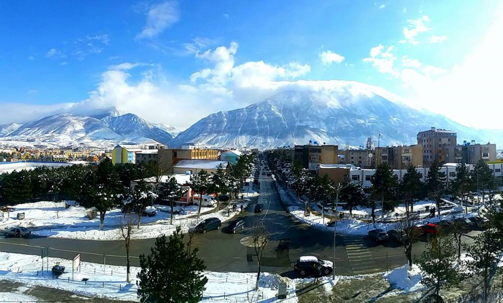

Kukesi
Kukësi është qytet në Shqipërinë verilindore, i shtrirë në koordinatat 42,09° V, 20,43° L. Është qendra e Qarkut Kukës. Shtrihet në rrëzë të Malit të Gjallicës
dhe në breg të Liqenit të Fierzës, në Rrafshin e Lumës. Motoja e qytetit është “Qyteti i mikpritjes dhe bujarisë”.
Në vitin 2000 Kukësi kandidoi për Çmimin Nobel për Paqe me motivacionin e pritjes së mbi 450.000 shqiptarëve nga Kosova,
të dëbuar nga ushtria serbe, paraushtarakët serbë dhe serbët e armatosur në Kosovë. Në vitin 2010 banorët e Kukësit u shpallën
nga USAID si më të lumturit e Shqipërisë.Megjithëse zona e Kukësit është një vendbanim i hershëm historik, siç dëshmohet prej varreve ilire të zbuluara në fshatin Kënetë,
Kukësi ose Kukësi i Ri është një ndër qytetet më të reja në Shqipëri.Kukësi shtrihet në pjesën verilindore të Krahinës Malore Qëndrore në pellgun
me të njëjtin emër, vendosur në gjërësinë gjeografike veriore ndërmjet 41°17’29 dhe 42°05’09 dhe në gjatësinë gjeografike lindorë nga 19°23’30 dhe
në 20°23’23. Kukësi ka formën e një shumëkëndëshi me gjatësi, veri-jug 26 km dhe gjerësi 35 km, sipërfaqja 933 km², ndërsa vija kufitare është 156 km.
Nga veriu kufizohet me bashkine e Hasit me vijën kufitare 34 km, nga lindja me vijën kufitare shtetërore 41 km, nga jugu me
bashkine e Peshkopisë 40 km dhe nga perëndimi me bashkine e Mirdites 21 km dhe bashkine e Pukës 20 km.
Bashkia Kukes
- Gjeografia
Qyteti i Kukësit shtrihet në pjesën verilindore të Republikës së Shqipërisë. Është qytet që kufizohet në verilindje dhe lindje me qytetin e Prizrenit (Kosovë), ku si pikë kontakti është dogana e Morinës, dhe në brendësi të territorit shqiptar kufizohet me Hasin në veri, Pukën në perëndim dhe Peshkopinë në jug. Kukësi ose Kukësi i Ri është vendosur në këmbë të malit të Gjallicës (2487 m) dhe është një ndër qytetet më të reja në Shqipëri. Përfundoi së ndërtuari në vitin 1976, dhe vendin e Kukësit të Vjetër e zuri hapësira ujore e liqenit artificial të Fierzës, i cili u ndërtua si rezultat i ndërtimit të hidrocentralit me po të njëjtin emër. Baseni i këtij liqeni furnizohet nga dy lumenj të rëndësishëm, Drini i Zi (buron në liqenin e Ohrit) dhe Drini i Bardhë (buron në Malet e Rugovës, Kosovë). Të dyja këto degë formojnë Lumin Drin, më të gjatin në Shqipëri me 280 km, i cili derdhet në Detin Adriatik nëpërmjet Gjirit të Lezhës. Bashkimi i dy Drinave i kanë dhënë Kukësit formën e një gadishulli, gjë që i jep një pamje shumë piktoreske.
Ka një shtrirje veri-jug prej 1,4 km dhe lindje-perëndim prej 0,9 km. Ka një sipërfaqe të përgjithshme prej 150 ha dhe lartësi mesatare 950 m mbi nivelin e detit.
- Klima
Klima karakterizohet nga një dimër i ashpër dhe një verë e nxehtë. Temperatura mesatare vjetore në rrethin e Kukësit sillet rreth 11,9 °C. Temperaturat mesatare ekstreme sillen nga 3,9 deri 25,4 °C. Reshjet vjetore mesatare sillen nga 800 deri në 1100 mm. Shpejtësia mesatare e erës është 3,5 m/s në dimër, 3,1 m/s në pranverë dhe 2,3 m/s në vjeshtë. Trashësia e shtresës së borës është në varësi të drejtpërdrejtë me lartësinë mbi nivelin e detit dhe nga ekspozimi i shpateve. Zakonisht ajo lëviz nga 40 cm deri në 200 cm. Shtresa e dëborës mesatarisht zgjat 35-40 ditë.
